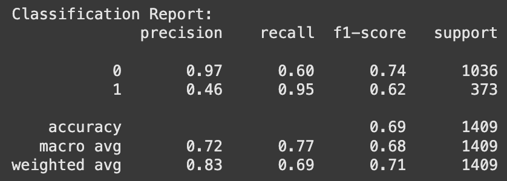

Building a Machine Learning
Determining and testing various machine learning model as well as feature engineering

Determining which machine learning model to use.
Gradient Boost Models
Gradient Boosting Models are among the best options for analyzing customer churn prediction.
Why Use Gradient Boost Models?
- Captures patterns: Since churn is influenced by many non-linear, subtle patterns, GBM models can handle complex relationships automatically without manually adding feature interactions.
- Built-in feature importance: Helps identify which features are most impactful for customer churn.
- Robust to missing and categorical data: Handles missing values well, reducing the need for data pre-processing.
- High accuracy, low bias: Minimizes variance and bias, which helps reduce overfitting.
Different Types of GBMs
XGBoost (Extreme Gradient Boosting)
- Fast
- Accurate
- Limitation: Categorical features need to be one-hot encoded.
LightGBM (by Microsoft)
- Faster than XGBoost
- More memory-efficient than XGBoost
- Supports categorical features natively
- Limitation: Can be sensitive to small datasets or overfit if not tuned properly.
CatBoost (by Yandex)
- Best at dealing with categorical variables without preprocessing
- Slower than LightGBM, but often more accurate
- Less sensitive to overfitting
Modeling Journey and Dataset Selection
Now originally, I wanted to find the best performing gradient boost models. I ran all three using the same target and explanatory variable, and I discovered that they all produced the exact same results. I had thought that CatBoost would be the best as it handles categorical data very well, and this Amazon dataset had a lot, yet it seemed that they were all equal. As such, for the simplicity of my audience being the general public, I decided that it would be best to use an XGBoost machine learning algorithm as this is what most people are more familiar with out of the three different methods.
Now, when I was running my model, I ran it using three datasets. The first was an instacart dataset. Now, this was very limited with around 7-8 columns and not that many rows. This later proved to be an issue as the algorithm found it difficult to find any meaningful patterns in the data, since there was a lack of it. In addition, no matter how many hyperparameters I tuned or changed the training model, the model itself wouldn’t provide any results greater than around 60%.
As such, I decided to go searching for other data. This time, Kaggle led me to an Amazon behavior survey dataset. Right off the bat, this dataset seemed more promising. It contained far more data and columns than the previous. In addition, the columns seemed to lead to customer churn as the data provided purchasing frequency, add-to-cart frequency, signified if the reviews were helpful, how the product was rated, and many more.
Feeling more hopeful, I began training using XGBoost. I would run feature importance scores, choose the top performing features, and this would eventually boost my models performance. The most notable, yet a mistake I caught too late, was that I created my own target variable.
This means that I relied on the data’s columns to create my churn variable. To put it simply, I told the model, if this customer is a “rare” or “never” completes a purchase, then classify them as 1, one who churns. In addition, I created ratio columns, where I used that purchasing frequency as well, which leaked in data to the model.
As such, even after dropping the purchasing frequency column, I still had those ratio columns that had results, which caused my model to perform abnormally well. I had a suspicion that I was leaking data, yet I could not find it.
I would perform exploratory analysis, create graphs and tables to see if there are any outliers or weird data. I couldn’t find it until I met with my professor. He explained to me that the ratios were the issue as well as creating my own target.
As such, we decided to find a new dataset together, one that has the churn column created and that is where we found the fictional telco churn dataset.
Starting Fresh
From these two past experiences, I was able to better understand the importance of having the right data as the right ones wouldn’t pose any issues or troubles. This dataset proved to do just that.
I began by first merging different datasets. I would choose the columns I wanted from the other datasets, then merge them together using an inner join in python.
Then, since the data was already clean and tidy, I began running a “general” testing model, where I included all the factors, despite the target. I noticed that the first feature importance score shows that the satisfaction score was abnormally high with an f-1 score of close to 200 when most are reaching 25. I decided to drop that feature as that signifies that it’s too closely correlated to churn. By doing so, this dropped my accuracy from 99 to 65, which is more reasonable.

After, I ran a feature on importance and selected the top five features: internet service, contract, dependents, streaming movies, and number of referrals. This led to a jump in accuracy score to 80%.
However, at this moment, I decided that the metric I wanted to focus on was the recall score for churns. This is due to wanting to catch all potential churners before they churn, so that the company could try to retain them using strategies as best as they could. After making this note, I noticed that the recall for churners was at 66 and I wanted to get this value higher.
I performed some exploratory analysis to better understand the variety in the data. The most notable was the difference in the count of active and non-active customers where there were around 5,000 active customers and around 2,000 non-active customers. This is important to note as this could lead to some bias towards active customers in the model, since that is the majority.
To address this, I decided to use a weight or a scale where I created a ratio by dividing the active to non-active customers giving me a ratio of 2.77. The weight was then added to the model and while this dropped in accuracy by 4% (to 0.76) the recall improved to 86%.
In hopes to get an even higher score, I began researching more about XGBoost models and the various hyperparameters than I can fine tune. While learning, I found something called the “threshold.” This is where the model begins to identify who is a churner and who isn’t.
Automatically, my model has its threshold set to 5% which gives each person a 50/50 chance. I decided to lower it to 35%, which makes the model much more sensitive, helping it catch more potential churners.
As a result, this adjustment worked and I was able to get a recall score of 95%. This means that this XGBoost model was able to catch 95% of actual churners which is helpful when we want to prevent any losses in customers.
